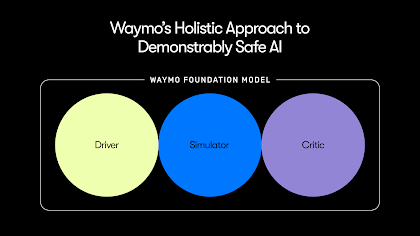
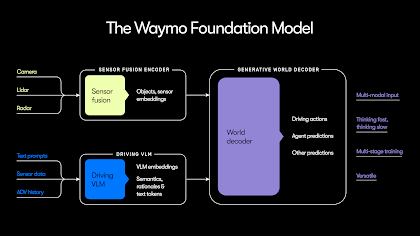
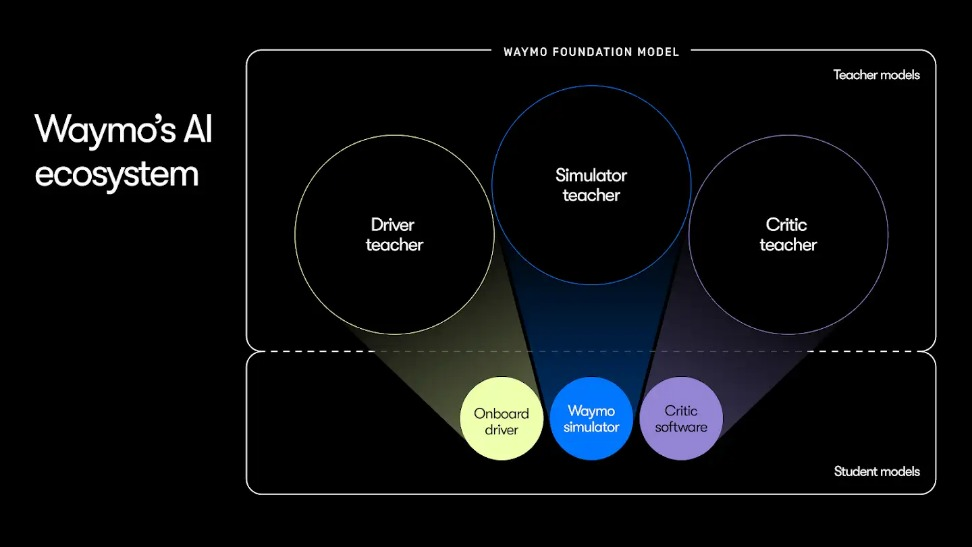
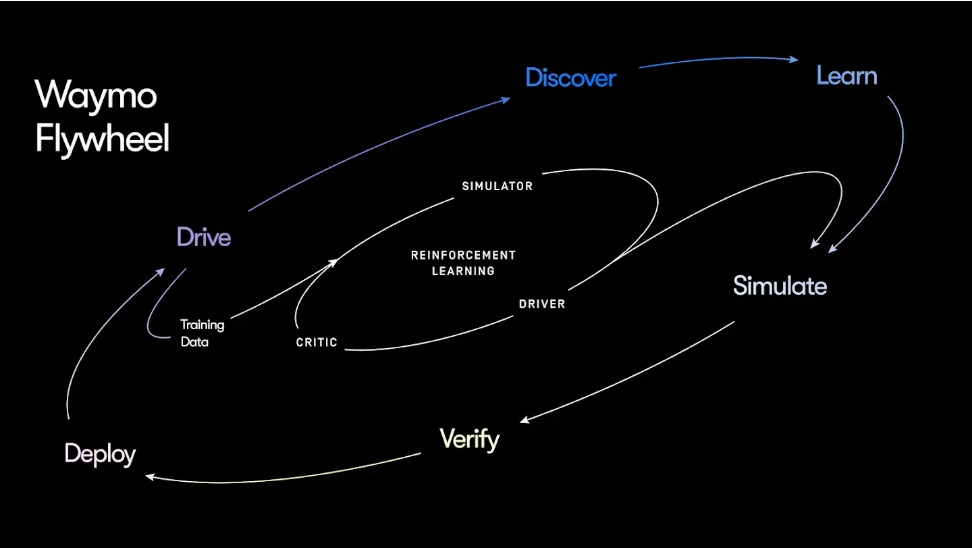

実証的に安全な自律走行のためのAI
公開日： 2025年12月9日 著者： Waymo AIチーム
自律走行は、物理世界におけるAIの究極の挑戦です。Waymoはこれを「実証的に安全なAI（demonstrably safe AI）」を最優先とすることで解決しています。安全性はモデルとAIエコシステム全体の設計において根幹に据えられています。その結果、物理世界でスケールとともに安全に稼働する、非常に高度なAIシステムを構築しました。完全自律走行で1億マイル以上を走破し、重傷事故をヒューマンドライバーと比較して10分の1以上に削減しています。
さあ、エンジンルームの中を覗いてみましょう。本記事ではWaymoのAI戦略と、それがいかにモメンタムを加速させ、より多くのライダーへこれまでにないスピードで安全にサービスを届けることを可能にしているかを詳しく解説します。Waymo Foundation Modelを中心としたホリスティックなAIアプローチを紐解きます。このFoundation Modelは、実証的に安全な統合AIエコシステムを動かし、加速された継続的な学習と改善をもたらしています。
AIへのホリスティックなアプローチ
多くのAIアプリケーションが機能を優先し安全性を後付けするのとは異なり、自律走行では安全性を後回しにすることはできません。Waymoにとって、それはAIエコシステムを構築する上での譲れない土台です。
実証的に安全なAIを達成するには——安全性が約束ではなく証明されるためには——ホリスティックなアプローチが必要です。スマートで有能なDriverだけでなく、クローズドループ型の現実的なSimulatorで様々な困難な状況においてDriverをトレーニングし厳格にテストすること、そしてDriverのパフォーマンスを評価し改善点を特定するための鋭敏なCriticも欠かせません。
力は統一にあります。安全性を核として共同開発されたDriver、Simulator、Criticはすべて、同じ基盤となるAI——Waymo Foundation Model——によって駆動され、継続的な好循環サイクル（virtuous cycle）を生み出しています。

Waymo Foundation Model：WaymoのAIの礎
Waymo Foundation Modelは、WaymoのAIエコシステムを支える、汎用性の高い最先端のワールドモデルです。その革新的なアーキテクチャは、純粋なEnd-to-Endアプローチやモジュラーアプローチと比較して大きなメリットをもたらします。
特に、学習済み埋め込み（learned embeddings）をモデルコンポーネント間のリッチなインターフェースとして最大限に活用し、トレーニング時に完全なEnd-to-Endシグナルのバックプロパゲーションをサポートしています。加えて、オブジェクト・セマンティック属性・道路グラフ要素といったコンパクトかつ具体化された構造化表現により、以下が可能になります：
- 推論時におけるDriverの強力な正確性・安全性の検証
- 大規模で物理的に正確なクローズドループSimulationの高効率実行
- Criticによる評価とトレーニング時の強化学習のための、強力で検証可能なフィードバックシグナル

Waymo Foundation Modelは「速く考え、じっくり考える（Think Fast and Think Slow、System 1とSystem 2とも呼ばれる）」アーキテクチャを採用しており、2つの異なるモデルコンポーネントで構成されています：
- センサーフュージョンエンコーダー（高速な反応のため）。Foundation Modelの知覚コンポーネントであり、カメラ・LiDAR・レーダーの入力を時系列にわたって統合し、オブジェクト情報、セマンティクス情報、およびダウンストリームタスク向けのリッチな埋め込みを生成します。これらの入力により、システムが高速かつ安全な運転判断を下せるようになります。
- Driving VLM（複雑なセマンティック推論のため）。Foundation Modelのこのコンポーネントは豊富なカメラデータを活用し、Waymoの走行データとタスクでファインチューニングされています。Geminiを使ってトレーニングされており、道路上の稀少・未知・複雑なセマンティックシナリオを理解するためにGeminiの広範な世界知識を活用します。例えば、前方の道路で車両が炎上しているという極めて稀なシナリオでは、物理的なスペースや走行可能なレーンが通過のために開いている場合でも、VLMはWaymo Driverが別のルートを選択したり引き返したりするよう促すセマンティックシグナルを提供できます。
両エンコーダーはWaymoのワールドデコーダーにデータを送り、デコーダーはこれらの入力を処理して、他の道路利用者の行動予測、高精度マップの生成、車両軌道の生成、および軌道検証シグナルの提供を行います。
WaymoのAIエコシステム：TeacherモデルからStudentモデルへの知識蒸留
ホリスティックなアプローチに基づき、Waymo Foundation ModelはDriver、Simulator、Criticを支えます。まず各タスクにFoundation Modelを適応させ、それぞれの役割に優れた大規模で高品質なTeacherモデルを生成します。しかしこれらのTeacherモデルはリアルタイム意思決定のために車両上で動かすには大きすぎ、また何億マイルものシミュレーションや評価をクラウドで実行するにも大きすぎます。そのため、安全に小さなStudentモデルへと蒸留します。蒸留（Distillation）は重要な鍵です。大規模モデルの優れた性能を、よりコンパクトで効率的なバージョンの中に保持することを可能にします。AI他分野の傾向と同様に、強力で高容量のTeacherモデルをまずトレーニングし、その後に効率的な蒸留技術を活用することで、得られるStudentのスケーリング則を大幅に改善できます。

Driver
Teacher Driverモデルは、安全で快適かつ法令遵守の動作シーケンスを生成するようトレーニングされています。蒸留によって、豊かな世界理解と推論能力が、リアルタイムの車載デプロイ向けに最適化された効率的なStudentモデルへ移転されます。蒸留のメリットを最大化するため、車載アーキテクチャはWaymo Foundation Modelの構造を反映するよう設計されています。重要なのは、Waymo Driverが独立した厳格な車載検証レイヤーを採用しており、Driverの生成的MLモデルが生成した軌道を検証している点です。
Simulator
潜在的な衝突、悪天候、複雑な交差点、異常な道路挙動など、多様で困難なシナリオにわたるDriverのクローズドループのトレーニングとテストに不可欠なツールです。Simulator Teacherモデルは高精度のマルチモーダルな動的世界を作成し、Driverを評価します。Studentモデルはこれらの大規模モデルの計算効率の高いバージョンで、Driverの堅牢な評価に必要な大規模シミュレーションを実行するよう設計されています。Waymo Foundation Modelのアーキテクチャにより、コンパクトに具体化されたワールドステート表現とセンサーシミュレーションをシームレスに組み合わせることが可能となり、大規模で超リアル・物理的に正確、かつ計算効率の高い仮想環境を実現しています。

Critic
Waymo Driverをストレステストし、微妙なエッジケースを事前に特定し、迅速かつ的確な改善を可能にする世界水準の評価システムです。Critic Teacherモデルは走行挙動を分析し、Studentモデルのトレーニングおよびリッチな評価データセットの自動構築に使用される高品質シグナルを生成します。Critic Studentモデルは走行ログを分析し、興味深いまたは問題のあるシナリオを特定し、走行品質に関するきめ細かいフィードバックを提供します。
Waymo Foundation Modelによって支えられるこれらすべてのコンポーネントが、シームレスなAIエコシステムを構成し、継続的な学習と改善のフライホイールを生み出しています。
継続的改善のフライホイールを生み出す
優れたDriverは静的ではありません——それは継続的な学習と洗練の産物です。Waymo Driverの進化を支えるメカニズムはいくつかあります。SimulatorとCriticによって支えられたインナーループでは、強化学習（Reinforcement Learning）を活用してDriverをトレーニングします。安全に管理されたシミュレーション環境内でDriverは経験を積み、行動に基づいて報酬やペナルティを受け取ることで、大規模な学習が可能になります。
Waymoの実世界走行データによって構築されたアウターループは、さらに強力な学習フライホイールを生み出します。サイクルはCriticが膨大な完全自律走行経験から最適でない走行挙動を自動的にフラグ立てすることから始まります。次に、これらの事象から改善された代替挙動を生成し、Driverのトレーニングデータとして活用します。改善内容はSimulatorで厳格にテストされ、Criticが修正を検証します。最終的に、安全フレームワークが不合理なリスクの不在を確認して初めて——そのときに限って——強化されたDriverが実世界にデプロイされます。

このフライホイールは、長年にわたって蓄積し今や指数関数的なペースで増加し続けている、前例のない完全自律走行データによって実現されています。従来は高品質な手動運転データに大きく依存してきましたが、今日Waymoの完全自律走行マイレージは手動データを大幅に上回っています。この量の実世界での完全自律走行経験に代わるものは存在しません——どれほどのシミュレーション、手動運転データ収集、またはテストドライバーによる運用も、Waymo Driverが完全に主導権を握っているときに遭遇する状況と反応のスペクトルを再現することはできません。このリッチな実世界の完全自律走行データをWaymo独自のフライホイールに直接統合することで、Waymo Driverは自身の広大な経験から学習し、継続的に改善し続けることができます。
AIへのホリスティックなアプローチを採用し、学習フライホイールを構築することで、私たちは単にWaymo Driverを進化させるだけでなく、スケールを伴った安全な自律走行のスタンダードを打ち立てています。継続的にイノベーションを進め、可能性の限界を押し広げており、AIにおけるワクワクする取り組みがまだ多く待ち受けています。